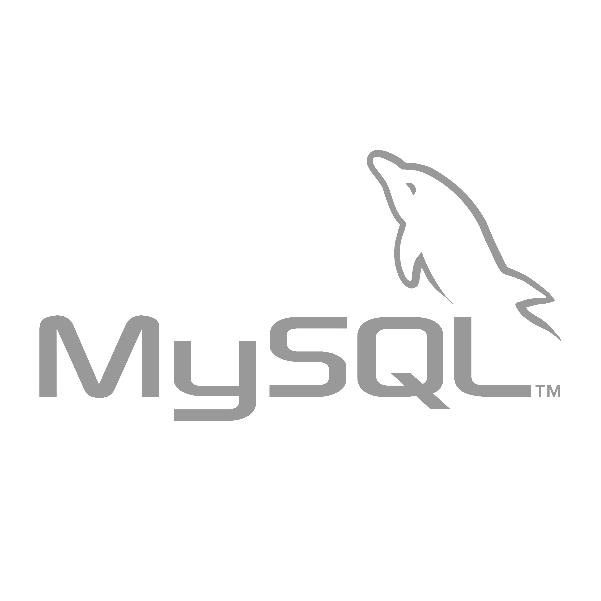

Romain Dailly
Developpeur WEB Front-end (React / Angular)
Dans le cadre d'une reconversion professionnelle, je me suis formé, du 25 février au 26 juillet 2019, à la Wild Code School à Nantes, en JavaScript (ES6), React / Node.js. A l'issue de cette formation, j'ai effectué un stage de 4 mois au sein de l'entreprise Fifty Truck, au cours duquel j'ai pu développer des compétences Fullstack. Riche d'expériences professionnelles variées et passionné par le développement, je m'adapte facilement à toutes les situations. L'éthique est pour moi quelque chose d'essentiel. Je suis très intéréssé par le GreenIT, qui me semble être une approche d'avenir. Les valeurs humaines, la conscience écologique et l'intégrité éthique sont pour moi fondamentaux pour faire un environnement de travail au sein duquel j'aurai à cœur de me dépasser. Etant junior, et n'ayant qu'une courte expérience en Fullstack, je recherche un poste de développeur Front-end en temps plein.
Projets

Dashboard FiftyTruck
Prototype de tableau de bord réalisé au sein d'un stage de 4 mois, en autonomie, qui permet à l'utilisateur de visualiser son utilisation de FiftyTruck à travers des graphiques sur lesquels il a la possibilité d'appliquer des filtres et d'enregistrer des groupes de filtres dans des réglages personnalisés.
Frontend : Angular 8, Bootstrap, Angular Material, Ng2Charts, Chart.js, ngxTranslate, ngxCookieService, RXJS, Swagger (authentification). Backend : API en Lumen 6 (Micro-framework Laravel PHP), MySql, Swagger pour la récupération de data sur l'Api de fiftyTruck.

Application météo
Application météo réalisée en solo en 30h.
Technologies: React, Bootstrap, l'API Accuweather.

ScanEat
Projet à la Wild Code School, application web mobile, qui permet de scanner des produits alimentaires afin d'obtenir des informations nutritionnelles et environnementales. Réalisé à 4 en 3 semaines.
Technologies: React, React-materialize, NPM, l'API openFoodFacts, le composant Quagga.js(scanner).
Compétences
-


-
Mobile-First, Design Responsive
-
Developpement Agile & Scrum
-
Github
-
Veille technologique
Soft Skills
-
Passionné par la découverte et l'apprentissage
-
Autonome et adaptable
-
Persévérant et résistant face au stress
-
Créatif
-
Sens du collectif et humilité au service du projet
-
Courtois et négociateur
-
Pédagogue et empathique